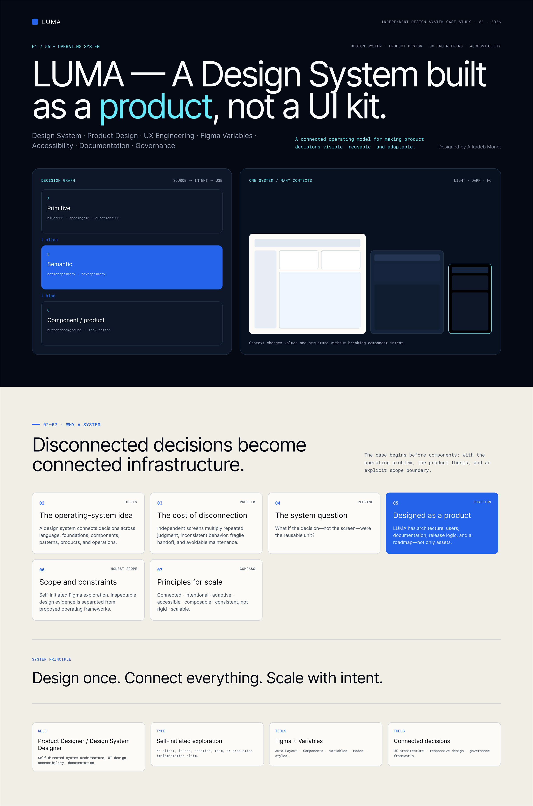
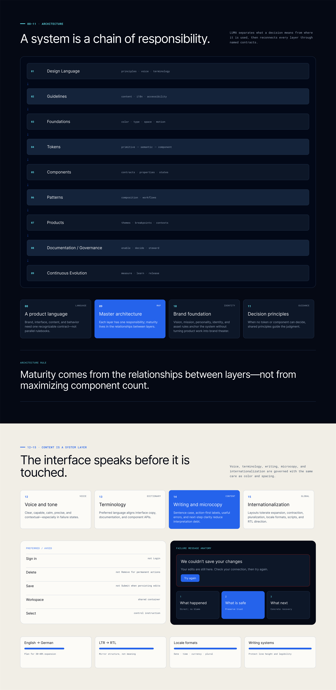
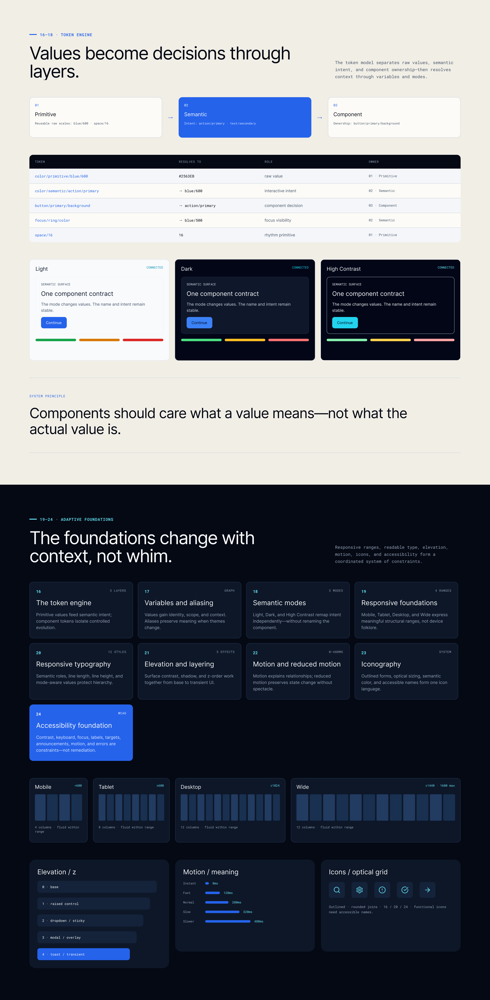
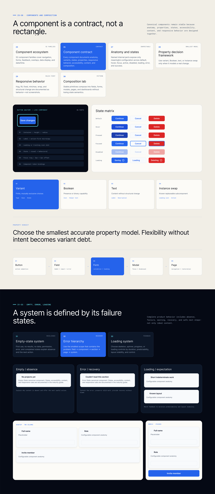
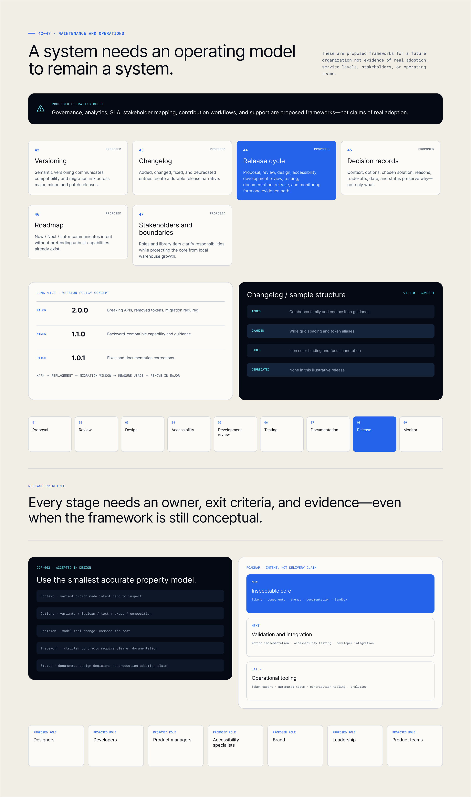
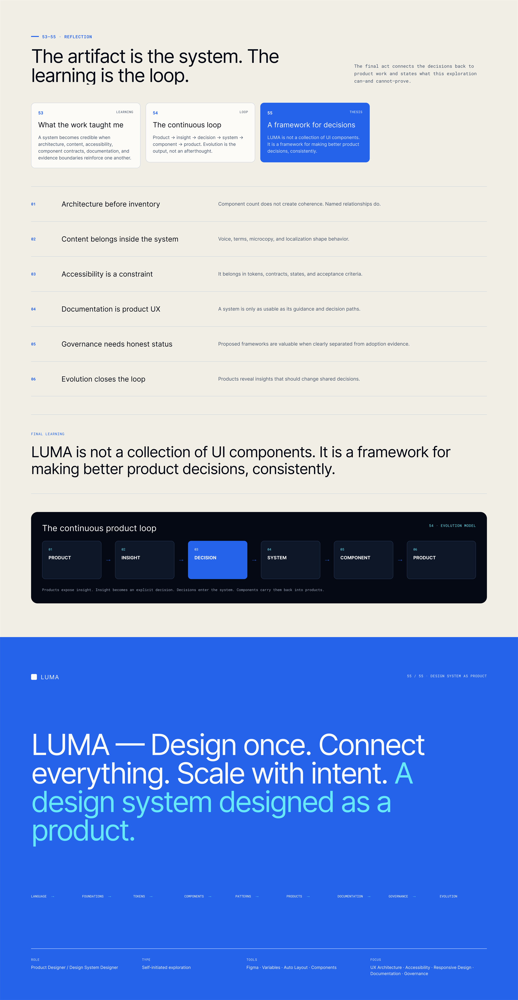

Click to zoom & inspect
A design system designed as a product, not a UI kit. LUMA is a connected operating framework that bridges design decisions, token graphs, component contracts, release operations, and stewardship evidence across 8 sequential acts.







